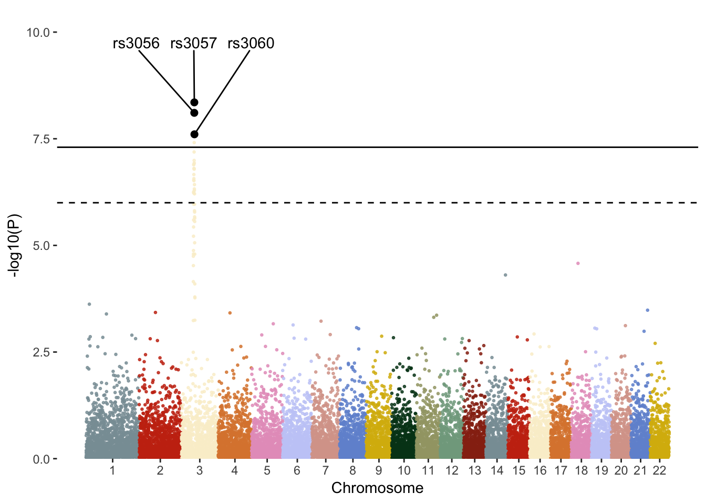

Page last updated: 04 May, 2019
For these plots we will use the GWAS data.
This manhattan plot script is taken from pcgoddard github because it is way better than what I came up with.
##### Packages
library(ggrepel)
library(ggplot2)
library(dplyr)
##### Plotting variables
significant <- 5e-8 # significant threshold line
suggestive <- 1e-6 # suggestive threshold line
highlight_snps <- c("rs3057","rs3056","rs3060") # snps to highlight in a different colour to other SNPs
annotate_snps <- c("rs3057","rs3056","rs3060") # snps to annotate with a label of their rsID
##### Manhattan plot function
gg.manhattan <- function(df, CHR, P, BP, threshold, annotate, hlight, col, ylims, title){
# format df
df.tmp <- df %>%
# Compute chromosome size
group_by(CHR) %>%
summarise(chr_len=max(BP)) %>%
# Calculate cumulative position of each chromosome
mutate(tot=cumsum(chr_len)-chr_len) %>%
select(-chr_len) %>%
# Add this info to the initial dataset
left_join(df, ., by=c("CHR"="CHR")) %>%
# Add a cumulative position of each SNP
arrange(CHR, BP) %>%
mutate( BPcum=BP+tot) %>%
# Add highlight and annotation information
mutate( is_highlight=ifelse(SNP %in% hlight, "yes", "no")) %>%
mutate( is_annotate=ifelse(P < threshold, "yes", "no")) %>%
mutate( is_annotate=ifelse(SNP %in% annotate, "yes", "no"))
# get chromosome center positions for x-axis
axisdf <- df.tmp %>% group_by(CHR) %>% summarize(center=( max(BPcum) + min(BPcum) ) / 2 )
ggplot(df.tmp, aes(x=BPcum, y=-log10(P))) +
# Show all points
geom_point(aes(color=as.factor(CHR)), alpha=0.8, size=0.5) +
scale_color_manual(values = rep(col, 22 )) +
# custom X axis:
scale_x_continuous( label = axisdf$CHR, breaks= axisdf$center ) +
scale_y_continuous(expand = c(0, 0), limits = ylims) + # expand=c(0,0) removes space between plot area and x axis
# add plot and axis titles
ggtitle(paste0(title)) +
labs(x = "Chromosome") +
# add genome-wide sig and sugg lines
geom_hline(yintercept = -log10(significant), linetype = "solid", col = "black") +
geom_hline(yintercept = -log10(suggestive), linetype = "dashed", col = "black") + # comment out if you dont want suggetsive line
# Add highlighted points
geom_point(data=subset(df.tmp, is_highlight=="yes"), color="black", size=2) +
# Add label using ggrepel to avoid overlapping
geom_text_repel(data=df.tmp[df.tmp$is_annotate=="yes",],
aes(label=SNP),
min.segment.length = 0.01,
force = 1,
nudge_x = 0.5,
nudge_y = 3,
colour = "black"
) +
# Customise the theme:
theme_bw(base_size = 11) +
theme(
plot.title = element_text(hjust = 0.5),
legend.position="none",
panel.border = element_blank(),
panel.grid.major.x = element_blank(),
panel.grid.minor.x = element_blank(),
panel.grid.major.y = element_blank(),
panel.grid.minor.y = element_blank()
)
}
# Plot
gg.manhattan(df = gwas_data,
annotate = annotate_snps, # provide a list of SNPs to annotate with labels
threshold = NA, # what threshold will you highlight SNPs from
hlight = highlight_snps, # provide a list of SNPs to highlight in a different colour
col = discrete_wes_pal, # provide colours or a vector of colours
ylims = c(0,10), # provide minimum and maximum of the Y axis
title = "") 